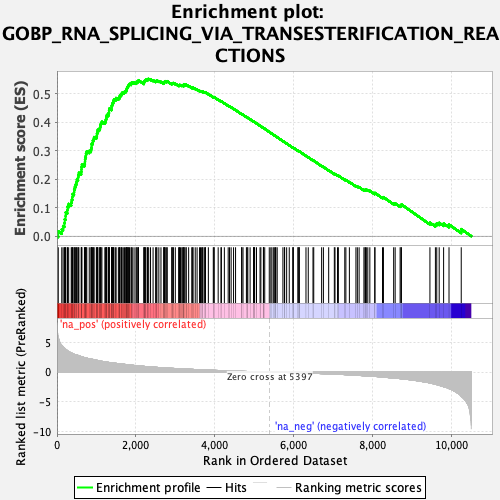
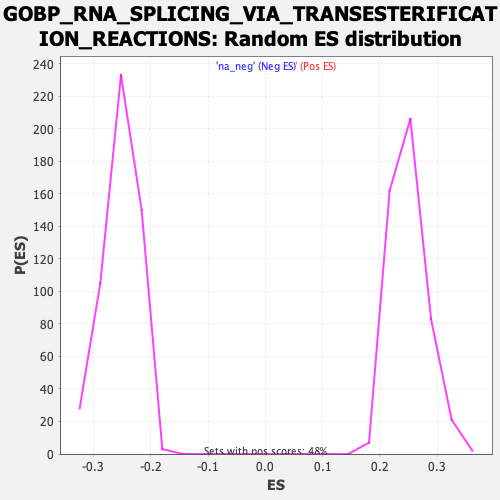

| Dataset | qlf.KOd4vsWTd4_gsea_score |
| Phenotype | NoPhenotypeAvailable |
| Upregulated in class | na_pos |
| GeneSet | GOBP_RNA_SPLICING_VIA_TRANSESTERIFICATION_REACTIONS |
| Enrichment Score (ES) | 0.5522301 |
| Normalized Enrichment Score (NES) | 2.2091255 |
| Nominal p-value | 0.0 |
| FDR q-value | 0.0 |
| FWER p-Value | 0.0 |

| SYMBOL | RANK IN GENE LIST | RANK METRIC SCORE | RUNNING ES | CORE ENRICHMENT | |
|---|---|---|---|---|---|
| 1 | C1QBP | 32 | 5.812 | 0.0171 | Yes |
| 2 | MAGOHB | 121 | 4.447 | 0.0240 | Yes |
| 3 | NCL | 155 | 4.245 | 0.0356 | Yes |
| 4 | PRMT7 | 189 | 3.993 | 0.0463 | Yes |
| 5 | SNRPD3 | 196 | 3.959 | 0.0594 | Yes |
| 6 | PRMT5 | 218 | 3.826 | 0.0707 | Yes |
| 7 | METTL16 | 221 | 3.786 | 0.0837 | Yes |
| 8 | SYNCRIP | 264 | 3.556 | 0.0920 | Yes |
| 9 | MPHOSPH10 | 269 | 3.536 | 0.1039 | Yes |
| 10 | SRSF6 | 296 | 3.436 | 0.1133 | Yes |
| 11 | PRPF19 | 361 | 3.208 | 0.1183 | Yes |
| 12 | PRPF31 | 375 | 3.168 | 0.1280 | Yes |
| 13 | GEMIN6 | 390 | 3.106 | 0.1375 | Yes |
| 14 | NCBP2 | 394 | 3.093 | 0.1479 | Yes |
| 15 | SRSF7 | 432 | 2.977 | 0.1547 | Yes |
| 16 | TXNL4A | 436 | 2.968 | 0.1647 | Yes |
| 17 | CLNS1A | 453 | 2.934 | 0.1734 | Yes |
| 18 | LSM2 | 473 | 2.901 | 0.1816 | Yes |
| 19 | U2AF2 | 492 | 2.848 | 0.1898 | Yes |
| 20 | GEMIN4 | 504 | 2.830 | 0.1986 | Yes |
| 21 | TRA2A | 534 | 2.784 | 0.2054 | Yes |
| 22 | LSM3 | 539 | 2.777 | 0.2147 | Yes |
| 23 | LSM7 | 555 | 2.735 | 0.2227 | Yes |
| 24 | LUC7L | 614 | 2.582 | 0.2261 | Yes |
| 25 | STRAP | 620 | 2.560 | 0.2345 | Yes |
| 26 | RBM8A | 623 | 2.552 | 0.2432 | Yes |
| 27 | RNPS1 | 632 | 2.535 | 0.2512 | Yes |
| 28 | LUC7L3 | 696 | 2.431 | 0.2536 | Yes |
| 29 | PRPF39 | 708 | 2.411 | 0.2609 | Yes |
| 30 | GEMIN5 | 712 | 2.395 | 0.2689 | Yes |
| 31 | MAGOH | 717 | 2.381 | 0.2768 | Yes |
| 32 | HNRNPC | 732 | 2.354 | 0.2836 | Yes |
| 33 | PPIE | 736 | 2.352 | 0.2915 | Yes |
| 34 | SMNDC1 | 755 | 2.321 | 0.2979 | Yes |
| 35 | HSPA8 | 818 | 2.237 | 0.2996 | Yes |
| 36 | SNRPD1 | 861 | 2.183 | 0.3031 | Yes |
| 37 | DDX1 | 870 | 2.169 | 0.3099 | Yes |
| 38 | SNRPA1 | 878 | 2.159 | 0.3167 | Yes |
| 39 | RBMXL1 | 879 | 2.158 | 0.3242 | Yes |
| 40 | TRA2B | 904 | 2.119 | 0.3293 | Yes |
| 41 | HNRNPA3 | 910 | 2.116 | 0.3361 | Yes |
| 42 | SRSF10 | 931 | 2.084 | 0.3414 | Yes |
| 43 | PHF5A | 940 | 2.073 | 0.3479 | Yes |
| 44 | DDX20 | 998 | 1.992 | 0.3493 | Yes |
| 45 | SNRNP70 | 1011 | 1.969 | 0.3549 | Yes |
| 46 | SMN1 | 1014 | 1.968 | 0.3616 | Yes |
| 47 | SNRPD2 | 1029 | 1.943 | 0.3670 | Yes |
| 48 | TGS1 | 1033 | 1.936 | 0.3734 | Yes |
| 49 | U2AF1 | 1072 | 1.867 | 0.3762 | Yes |
| 50 | PRDX6 | 1089 | 1.845 | 0.3811 | Yes |
| 51 | PPWD1 | 1098 | 1.835 | 0.3867 | Yes |
| 52 | EIF4A3 | 1104 | 1.827 | 0.3926 | Yes |
| 53 | SF3A3 | 1118 | 1.817 | 0.3976 | Yes |
| 54 | PPIL3 | 1139 | 1.794 | 0.4019 | Yes |
| 55 | DDX39B | 1214 | 1.715 | 0.4007 | Yes |
| 56 | DCPS | 1234 | 1.698 | 0.4047 | Yes |
| 57 | WBP11 | 1239 | 1.685 | 0.4102 | Yes |
| 58 | SRSF3 | 1252 | 1.675 | 0.4149 | Yes |
| 59 | CWC27 | 1256 | 1.671 | 0.4204 | Yes |
| 60 | LSM8 | 1264 | 1.662 | 0.4255 | Yes |
| 61 | CELF1 | 1304 | 1.621 | 0.4274 | Yes |
| 62 | HTATSF1 | 1308 | 1.618 | 0.4327 | Yes |
| 63 | BCAS2 | 1320 | 1.607 | 0.4372 | Yes |
| 64 | SNRPA | 1321 | 1.606 | 0.4428 | Yes |
| 65 | PPIH | 1326 | 1.601 | 0.4480 | Yes |
| 66 | SRSF1 | 1383 | 1.557 | 0.4479 | Yes |
| 67 | ISY1 | 1385 | 1.556 | 0.4533 | Yes |
| 68 | SF3B3 | 1388 | 1.554 | 0.4585 | Yes |
| 69 | PRPF40A | 1402 | 1.540 | 0.4626 | Yes |
| 70 | RBM15B | 1407 | 1.535 | 0.4675 | Yes |
| 71 | SNRPE | 1427 | 1.516 | 0.4709 | Yes |
| 72 | PABPC1 | 1432 | 1.509 | 0.4758 | Yes |
| 73 | SRSF9 | 1445 | 1.498 | 0.4799 | Yes |
| 74 | HNRNPK | 1489 | 1.460 | 0.4807 | Yes |
| 75 | PRPF3 | 1497 | 1.456 | 0.4851 | Yes |
| 76 | RBM17 | 1557 | 1.404 | 0.4843 | Yes |
| 77 | NUP98 | 1583 | 1.385 | 0.4867 | Yes |
| 78 | RBM14 | 1590 | 1.379 | 0.4909 | Yes |
| 79 | SNRPG | 1596 | 1.375 | 0.4952 | Yes |
| 80 | SNRNP40 | 1629 | 1.354 | 0.4968 | Yes |
| 81 | GEMIN7 | 1637 | 1.345 | 0.5008 | Yes |
| 82 | RAVER1 | 1653 | 1.334 | 0.5039 | Yes |
| 83 | SRRM1 | 1693 | 1.306 | 0.5047 | Yes |
| 84 | PRPF4B | 1713 | 1.291 | 0.5073 | Yes |
| 85 | SNRPB | 1742 | 1.268 | 0.5090 | Yes |
| 86 | USP39 | 1758 | 1.259 | 0.5119 | Yes |
| 87 | LSM6 | 1765 | 1.254 | 0.5157 | Yes |
| 88 | PNN | 1772 | 1.248 | 0.5195 | Yes |
| 89 | PRPF8 | 1781 | 1.244 | 0.5230 | Yes |
| 90 | FXR1 | 1797 | 1.227 | 0.5258 | Yes |
| 91 | SF3B5 | 1809 | 1.214 | 0.5290 | Yes |
| 92 | SAP18 | 1824 | 1.206 | 0.5318 | Yes |
| 93 | SF3A1 | 1838 | 1.194 | 0.5347 | Yes |
| 94 | SNRPB2 | 1879 | 1.168 | 0.5349 | Yes |
| 95 | GEMIN2 | 1885 | 1.163 | 0.5384 | Yes |
| 96 | SF3B4 | 1909 | 1.144 | 0.5402 | Yes |
| 97 | DBR1 | 1954 | 1.110 | 0.5398 | Yes |
| 98 | ALYREF | 2003 | 1.077 | 0.5388 | Yes |
| 99 | HNRNPL | 2024 | 1.059 | 0.5406 | Yes |
| 100 | RBM7 | 2034 | 1.052 | 0.5433 | Yes |
| 101 | HNRNPA2B1 | 2061 | 1.035 | 0.5444 | Yes |
| 102 | RBM19 | 2067 | 1.032 | 0.5475 | Yes |
| 103 | LUC7L2 | 2205 | 0.956 | 0.5375 | Yes |
| 104 | NCBP1 | 2208 | 0.950 | 0.5406 | Yes |
| 105 | SMU1 | 2213 | 0.947 | 0.5435 | Yes |
| 106 | SNRNP35 | 2225 | 0.944 | 0.5457 | Yes |
| 107 | SRSF2 | 2240 | 0.930 | 0.5476 | Yes |
| 108 | BUD13 | 2254 | 0.923 | 0.5495 | Yes |
| 109 | HNRNPA1 | 2294 | 0.898 | 0.5489 | Yes |
| 110 | PRPF40B | 2301 | 0.894 | 0.5514 | Yes |
| 111 | EFTUD2 | 2325 | 0.883 | 0.5522 | Yes |
| 112 | PLRG1 | 2372 | 0.863 | 0.5508 | No |
| 113 | SF1 | 2437 | 0.837 | 0.5474 | No |
| 114 | SFPQ | 2502 | 0.800 | 0.5440 | No |
| 115 | SF3A2 | 2518 | 0.792 | 0.5453 | No |
| 116 | RBM15 | 2534 | 0.785 | 0.5465 | No |
| 117 | PUF60 | 2583 | 0.764 | 0.5445 | No |
| 118 | HNRNPU | 2637 | 0.745 | 0.5419 | No |
| 119 | RBM39 | 2708 | 0.712 | 0.5376 | No |
| 120 | TIA1 | 2711 | 0.711 | 0.5399 | No |
| 121 | JMJD6 | 2723 | 0.707 | 0.5413 | No |
| 122 | DHX38 | 2732 | 0.701 | 0.5429 | No |
| 123 | DHX9 | 2745 | 0.694 | 0.5442 | No |
| 124 | HNRNPF | 2782 | 0.680 | 0.5430 | No |
| 125 | CWC22 | 2796 | 0.674 | 0.5441 | No |
| 126 | RBMX2 | 2910 | 0.624 | 0.5353 | No |
| 127 | RBM25 | 2919 | 0.621 | 0.5367 | No |
| 128 | KHSRP | 2937 | 0.617 | 0.5372 | No |
| 129 | SNRNP200 | 2953 | 0.613 | 0.5378 | No |
| 130 | CACTIN | 3001 | 0.595 | 0.5353 | No |
| 131 | KHDRBS1 | 3085 | 0.565 | 0.5292 | No |
| 132 | METTL14 | 3104 | 0.559 | 0.5294 | No |
| 133 | SF3B6 | 3107 | 0.559 | 0.5311 | No |
| 134 | WDR83 | 3133 | 0.551 | 0.5306 | No |
| 135 | HNRNPM | 3169 | 0.537 | 0.5291 | No |
| 136 | SRRM2 | 3177 | 0.534 | 0.5303 | No |
| 137 | CDC5L | 3216 | 0.520 | 0.5284 | No |
| 138 | SNRPF | 3217 | 0.519 | 0.5302 | No |
| 139 | DAZAP1 | 3218 | 0.519 | 0.5320 | No |
| 140 | MBNL3 | 3222 | 0.519 | 0.5335 | No |
| 141 | PRPF38A | 3273 | 0.500 | 0.5304 | No |
| 142 | RBM6 | 3275 | 0.499 | 0.5320 | No |
| 143 | PTBP1 | 3339 | 0.479 | 0.5275 | No |
| 144 | SCAF11 | 3418 | 0.456 | 0.5215 | No |
| 145 | ZCRB1 | 3440 | 0.450 | 0.5210 | No |
| 146 | PQBP1 | 3451 | 0.445 | 0.5216 | No |
| 147 | PRPF4 | 3506 | 0.427 | 0.5178 | No |
| 148 | SART3 | 3553 | 0.413 | 0.5148 | No |
| 149 | PPIL1 | 3615 | 0.394 | 0.5102 | No |
| 150 | FXR2 | 3640 | 0.386 | 0.5092 | No |
| 151 | CASC3 | 3662 | 0.378 | 0.5085 | No |
| 152 | SF3B1 | 3694 | 0.371 | 0.5068 | No |
| 153 | CWF19L1 | 3698 | 0.370 | 0.5078 | No |
| 154 | LSM5 | 3737 | 0.360 | 0.5053 | No |
| 155 | LARP7 | 3760 | 0.354 | 0.5044 | No |
| 156 | DDX46 | 3766 | 0.353 | 0.5051 | No |
| 157 | RBM10 | 3839 | 0.333 | 0.4993 | No |
| 158 | USP49 | 3964 | 0.299 | 0.4882 | No |
| 159 | BUD31 | 3981 | 0.295 | 0.4877 | No |
| 160 | SNRNP25 | 3985 | 0.293 | 0.4884 | No |
| 161 | SRSF5 | 4088 | 0.266 | 0.4794 | No |
| 162 | GCFC2 | 4159 | 0.250 | 0.4735 | No |
| 163 | METTL3 | 4170 | 0.248 | 0.4734 | No |
| 164 | DDX41 | 4245 | 0.227 | 0.4669 | No |
| 165 | SRSF4 | 4342 | 0.209 | 0.4583 | No |
| 166 | SF3B2 | 4376 | 0.200 | 0.4558 | No |
| 167 | TXNL4B | 4417 | 0.188 | 0.4526 | No |
| 168 | WTAP | 4478 | 0.175 | 0.4473 | No |
| 169 | RBM4B | 4529 | 0.161 | 0.4430 | No |
| 170 | HNRNPH1 | 4682 | 0.128 | 0.4286 | No |
| 171 | CWF19L2 | 4688 | 0.127 | 0.4286 | No |
| 172 | RBMX | 4718 | 0.121 | 0.4262 | No |
| 173 | AAR2 | 4804 | 0.105 | 0.4183 | No |
| 174 | ZRSR2 | 4823 | 0.102 | 0.4169 | No |
| 175 | SCNM1 | 4840 | 0.099 | 0.4157 | No |
| 176 | ESRP2 | 4898 | 0.088 | 0.4104 | No |
| 177 | AQR | 4984 | 0.073 | 0.4024 | No |
| 178 | CDK13 | 4985 | 0.073 | 0.4026 | No |
| 179 | DDX5 | 5008 | 0.068 | 0.4007 | No |
| 180 | SNIP1 | 5013 | 0.068 | 0.4006 | No |
| 181 | THRAP3 | 5060 | 0.060 | 0.3963 | No |
| 182 | KDM1A | 5150 | 0.044 | 0.3878 | No |
| 183 | MBNL1 | 5171 | 0.040 | 0.3860 | No |
| 184 | DDX23 | 5235 | 0.030 | 0.3799 | No |
| 185 | SON | 5238 | 0.030 | 0.3798 | No |
| 186 | ZMAT2 | 5239 | 0.029 | 0.3799 | No |
| 187 | SNRPC | 5269 | 0.024 | 0.3772 | No |
| 188 | WBP4 | 5384 | 0.004 | 0.3661 | No |
| 189 | IK | 5424 | -0.004 | 0.3623 | No |
| 190 | SNW1 | 5452 | -0.008 | 0.3597 | No |
| 191 | FMR1 | 5497 | -0.015 | 0.3555 | No |
| 192 | U2AF1L4 | 5511 | -0.017 | 0.3543 | No |
| 193 | YTHDC1 | 5542 | -0.022 | 0.3514 | No |
| 194 | CELF2 | 5551 | -0.023 | 0.3507 | No |
| 195 | DHX35 | 5585 | -0.029 | 0.3476 | No |
| 196 | ZBTB7A | 5730 | -0.052 | 0.3338 | No |
| 197 | LSM4 | 5769 | -0.060 | 0.3303 | No |
| 198 | HNRNPH3 | 5774 | -0.060 | 0.3301 | No |
| 199 | RSRC1 | 5825 | -0.067 | 0.3255 | No |
| 200 | ZCCHC8 | 5891 | -0.078 | 0.3194 | No |
| 201 | DDX17 | 5983 | -0.094 | 0.3109 | No |
| 202 | PRPF6 | 5989 | -0.096 | 0.3107 | No |
| 203 | DHX8 | 5992 | -0.096 | 0.3108 | No |
| 204 | HNRNPR | 6111 | -0.116 | 0.2997 | No |
| 205 | COIL | 6118 | -0.118 | 0.2996 | No |
| 206 | SART1 | 6142 | -0.123 | 0.2978 | No |
| 207 | GPATCH1 | 6144 | -0.123 | 0.2981 | No |
| 208 | ZC3H10 | 6315 | -0.158 | 0.2821 | No |
| 209 | RBM5 | 6373 | -0.171 | 0.2771 | No |
| 210 | SFSWAP | 6493 | -0.198 | 0.2662 | No |
| 211 | PSIP1 | 6512 | -0.203 | 0.2652 | No |
| 212 | GEMIN8 | 6712 | -0.252 | 0.2467 | No |
| 213 | DHX16 | 6757 | -0.263 | 0.2433 | No |
| 214 | RBM42 | 6891 | -0.299 | 0.2314 | No |
| 215 | SRPK1 | 7034 | -0.337 | 0.2187 | No |
| 216 | DYRK1A | 7051 | -0.342 | 0.2183 | No |
| 217 | GPKOW | 7115 | -0.363 | 0.2135 | No |
| 218 | CWC15 | 7137 | -0.368 | 0.2127 | No |
| 219 | TFIP11 | 7299 | -0.418 | 0.1985 | No |
| 220 | REST | 7327 | -0.427 | 0.1973 | No |
| 221 | PTBP2 | 7416 | -0.458 | 0.1903 | No |
| 222 | CDC40 | 7582 | -0.522 | 0.1761 | No |
| 223 | USP4 | 7618 | -0.535 | 0.1745 | No |
| 224 | CRNKL1 | 7663 | -0.555 | 0.1722 | No |
| 225 | SRPK2 | 7785 | -0.606 | 0.1625 | No |
| 226 | UBL5 | 7812 | -0.614 | 0.1621 | No |
| 227 | PAXBP1 | 7825 | -0.621 | 0.1631 | No |
| 228 | XAB2 | 7846 | -0.630 | 0.1633 | No |
| 229 | RALY | 7883 | -0.647 | 0.1621 | No |
| 230 | RBM3 | 7935 | -0.669 | 0.1594 | No |
| 231 | RNPC3 | 8059 | -0.717 | 0.1499 | No |
| 232 | RBM41 | 8065 | -0.721 | 0.1520 | No |
| 233 | FRG1 | 8256 | -0.822 | 0.1363 | No |
| 234 | LSM1 | 8280 | -0.832 | 0.1370 | No |
| 235 | CD2BP2 | 8539 | -0.992 | 0.1153 | No |
| 236 | FAM172A | 8577 | -1.015 | 0.1152 | No |
| 237 | RBM22 | 8703 | -1.090 | 0.1068 | No |
| 238 | CWC25 | 8727 | -1.105 | 0.1084 | No |
| 239 | MBNL2 | 8736 | -1.109 | 0.1115 | No |
| 240 | SYF2 | 9459 | -1.812 | 0.0475 | No |
| 241 | SLU7 | 9598 | -2.035 | 0.0411 | No |
| 242 | RAVER2 | 9632 | -2.090 | 0.0452 | No |
| 243 | PRPF18 | 9694 | -2.208 | 0.0469 | No |
| 244 | PCBP4 | 9806 | -2.441 | 0.0446 | No |
| 245 | CIRBP | 9943 | -2.754 | 0.0409 | No |
| 246 | SETX | 10253 | -4.036 | 0.0248 | No |
